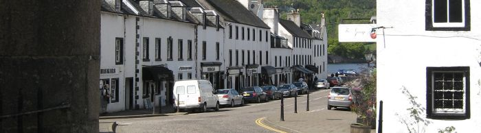
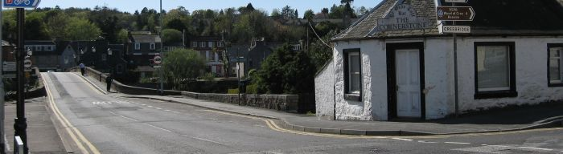

Fredagen den 13:e februari klockan 13:00 så hade jag min uppkörning för CE-behörighet, d.v.s. lastbil med tungt släp, vilket jag gjorde i en lastbil med fyraxligt släp, d.v.s. ett ekipage på 24 meter.
Och jag är tacksam att jag fick delta i Arbetsförmedlingens arbetsmarknadsutbildning till yrkesförare så att jag fick alla behörigheter, intyg och utbildningar som krävs för att vara en yrkesförare! Så på denna sida hoppas jag kunna hjälpa andra att förstå vad som behövs och ge lite annan information som kan vara bra att veta (och samtidigt sammanfatta för mig själv för framtiden).
Idag (2026-05-23) kör jag (oftast) en dragbil med påhängsvagn (trailer), d.v.s. runt 16,5 meter långt ekipage.

I detta avsnitt tas kort upp vad som krävs för att köra lastbil, ta behörigheter, med mera. Observera: Bekräfta information på denna sida innan du använder den! En bra källa är ofta Transportstyrelsen.
C-behörighet krävs för att köra tung lastbil, eller fordon över 3,5 ton (alternativt C1-behörighet om fordon väger upp till 7,5 ton). För tung lastbil med tungt släp krävs CE-behörighet (alternativt C1E-behörighet om ekipage väger upp till 12 ton). Krav för behörighet(er), t.ex. hälsa, behöver bekräftas var femte år.
Men för att köra lastbil kommersiellt ("för pengar") krävs även ett yrkeskompetensbevis (YKB) för lastbil. Utbildningen är 280 timmar - eller 140 timmar om minst 21 år - och avslutas med ett prov. Beviset behöver kompletteras med en fortbildning om 35 timmar innan det går ut, t.ex. genom utbildning 7 timmar varje år.
Har lastbil en digital färdskrivare krävs oftast även ett förarkort, vilket kan beställas från Transportstyrelsen. Förarkortet ska förnyas var femte år.
Sammanfattningsvis: Det krävs C- eller CE-behörighet, YKB och förarkort.
Ålder och "OK" från läkare, vilka ligger till grund för om man får körkortstillstånd eller inte. I skrivande stund måste man vara minst 21 år (lägre om läser på gymnasieskola) samt uppfylla krav för hälsa (t.ex. vad gäller diabetes, epilepsi och mer).
C-behörighet krävs för att ta CE-behörighet.
De flesta körkort/behörigheter, bevis och intyg kräver att man "repeterar", tar prov igen eller ansöker på nytt med jämna mellanrum, vilket brukar vara vart femte år.
Som exempel så måste personer över 45 år uppvisa ett läkarintyg var femte år för att behålla C-behörighet samt ADR-intyg (farligt gods) kompletteras med repetitionsutbildning och prov. Men påminnelse skickas inte ut för alla - så var uppmärksam på alla utgångsdatum!
Truckkort från någon godkänd utställare, t.ex. TYA, och tillstånd från arbetsgivare.
Utbildning, t.ex. i form av intyg, och tillstånd från arbetsgivare.
Vilket intyg/utbildning som krävs beror på typ av farligt gods och/eller mängd... Det finns (enligt mig) främst fem olika typer av intyg:

Jag vill nämna att det kan tillkomma undantag när lagar och regler ändras, så kallade övergångsregler eller hävdvunna rättigheter (se Transportstyrelsens hemsida). Ett exempel på detta är om B-behörighet godkänts före 1996-07-01 så behålls rätten att köra personbil oavsett vikt (vilket inte gällde mig :-S, som tog B-behörighet 1998).